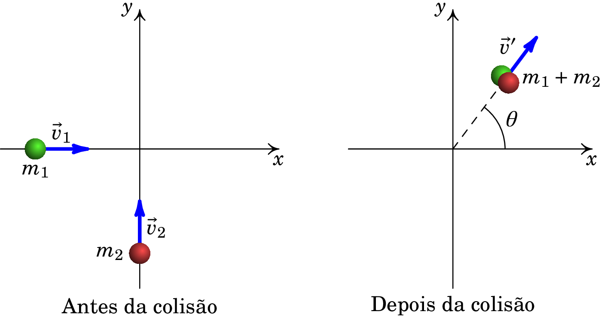
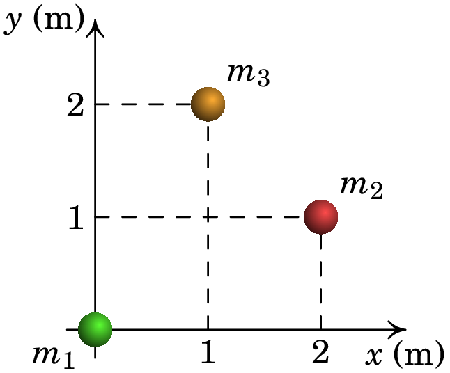

Jaime E. Villate. Problemas de Mecânica,
University of Porto, Portugal, 2025.
Estes problemas foram retirados da Quarta Folha Complementar de Problemas do Professor Paulo Sá.
1. Um corpo A, de massa kg, move-se com velocidade de valor m/s paralelamente ao eixo dos , no sentido positivo, quando colide com um corpo B, de massa kg, inicialmente em repouso. Após a colisão, o valor da velocidade do corpo A é m/s na direção que forma um ângulo de 30° com a direção inicial. Determine a velocidade final do corpo B. .
2. Considere-se o seguinte esquema:

Duas partículas de massas kg e kg colidem, no plano horizontal, permanecendo juntas após a colisão. Antes da colisão, a partícula 1 movia-se de oeste para este com velocidade de valor 6 km/h e a partícula 2 movia-se de sul para norte com velocidade de valor 8 km/h.
3. A figura seguinte mostra um sistema de três partículas, de massas kg, kg e kg.

4. Uma bola de 0.70 kg move-se horizontalmente a 5.0 m/s quando choca contra uma parede vertical e ricocheteia com rapidez 2.0 m/s. Qual o módulo da variação da quantidade de movimento da bola? 4.9 kg·m/s.
5. Um balde de 4.0 kg desliza sobre uma superfície horizontal sem atrito quando explode em dois fragmentos de 2.0 kg. Um destes move-se para norte a 3.0 m/s e o outro 30° a norte do leste a 5.0 m/s. Qual era a velocidade do balde antes da explosão? 3.5 m/s, na direção 51.8° ao norte do leste.